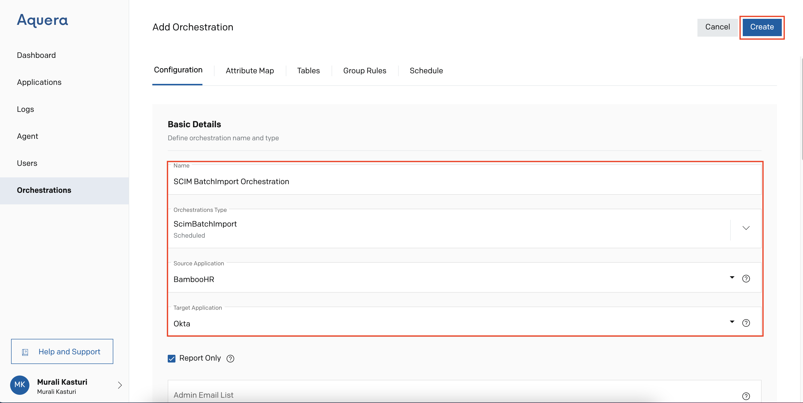
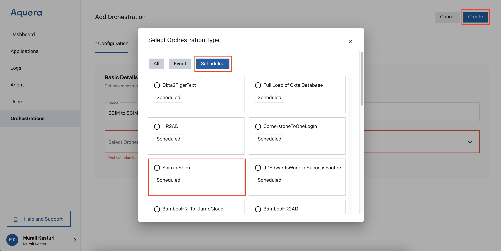
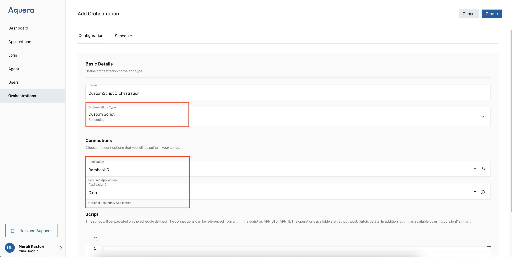
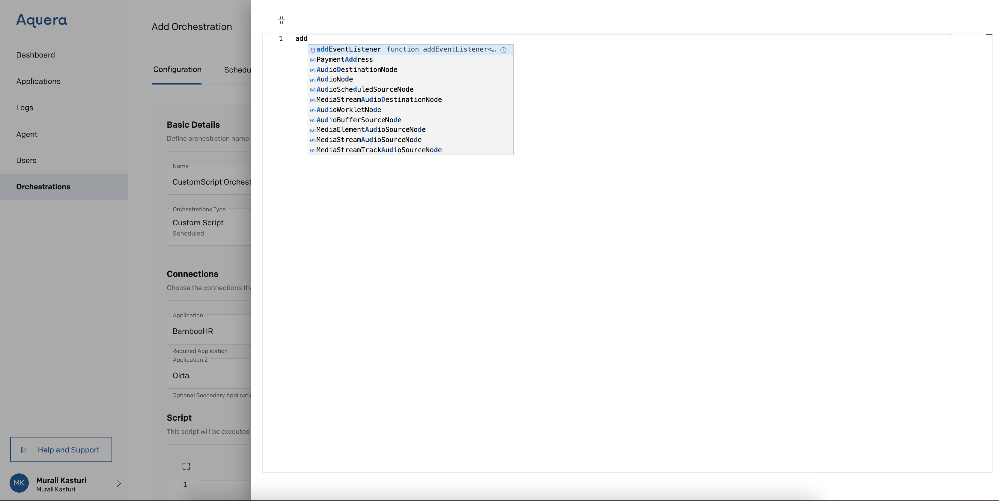
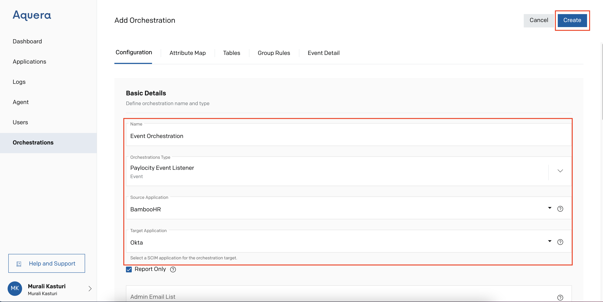
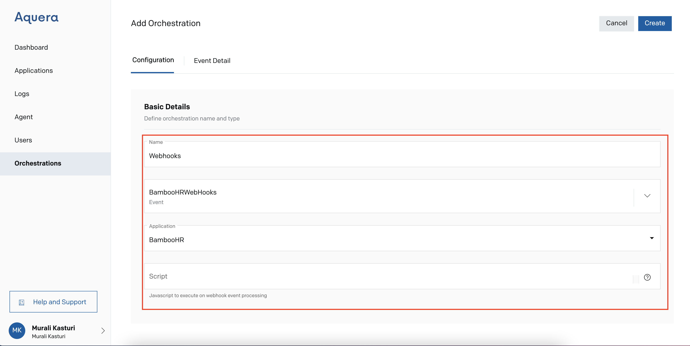

Synced from Zendesk Help Center
Building Orchestrations - Overview
← Back to index
Jump To
Overview
Types of Orchestrations
Scheduled Orchestrations
Event Orchestrations
Overview
An orchestration is an automated transfer of data from source applications to target applications. Aquera provides a platform for orchestrations. To perform orchestration, users need to create source and target applications on the Aquera platform. Once the applications are created, orchestrations can be created to facilitate manipulation of the target application based on changes in the source application. Users can regulate these updates by scheduling periodic orchestration execution.
Aquera’s Orchestration Module enables automated transfer of data between two Aquera Applications. It is unidirectional with one application specified as source and other as a target. For bi-directional sync we can specify two orchestrations with interchanged source and target applications. Orchestrations can be triggered to execute on-demand or can be scheduled to run at specified intervals.
Types of Orchestrations
Aquera supports two types of orchestrations - scheduled and event-driven. Scheduled orchestrations, which can be performed manually at any time facilitate automatic periodic orchestration runs. Event-based orchestrations are triggered automatically whenever there is a change in the source application. Event orchestrations require configuration and are initiated by the source application.
-
Scheduled Orchestrations:
-
Batch Import: This orchestration can be performed only when the Target Application supports Batch Update feature. To execute this orchestration, users needs to provide a name to the orchestration and select a Source and Target Applications from the dropdown before selecting orchestration type as ScimBatchImport

-
Standard: In the SCIM-to-SCIM orchestration, the SCIM (System for Cross-domain Identity Management) gateway services manage synchronous connections between identity management solutions and target applications. The orchestration takes place between the SCIM-based source application and the SCIM-based target application.

-
Custom Action: This orchestration enables the user to provide a custom script to execute the orchestration. This script will be executed on the schedule defined. The connections can be referenced from within the script as APP[0] or APP[1]. The operations available are get, put, post, patch and delete. In addition logging is available by using utils.log("string"). After providing orchestration name and selecting orchestration type, user can select maximum two applications to execute the orchestration. The first application is mandatory and the second one is an optional.

The script page gets expanded on clicking the expand icon and users can avail the auto help text feature while writing the script.

-
Event Orchestrations:
- Event Listener: The orchestration takes place between Source Application and Target Application. Changes made to the Source Application gets reflected to the Target Application.

-
Webhooks: User can execute this orchestration with the help of Javascript. After providing a name to the orchestration and selecting the orchestration type, user can design the orchestration and execute the same by using the script.
